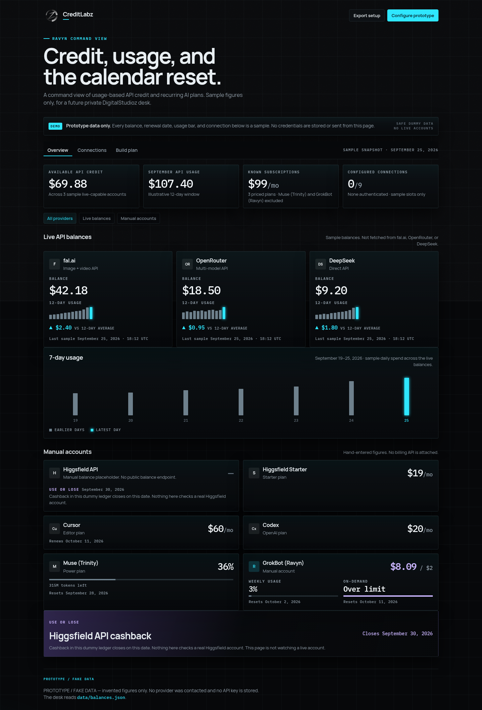
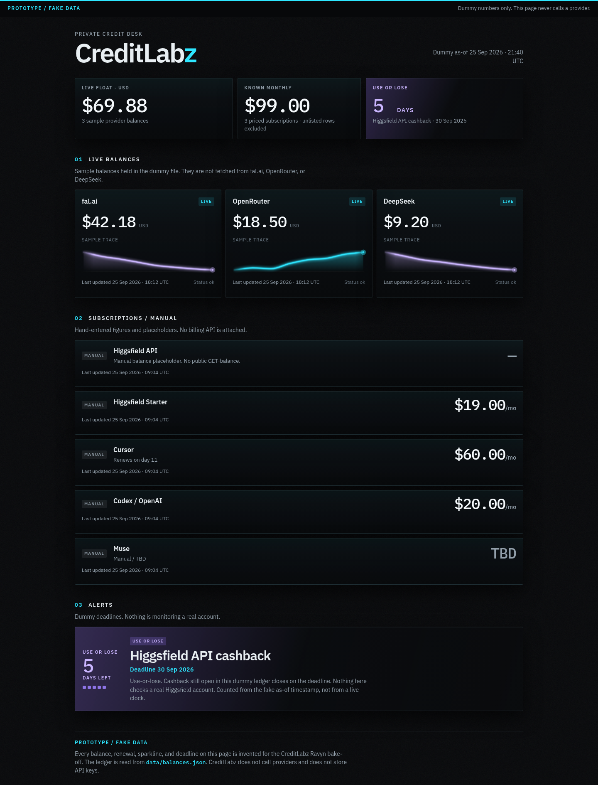
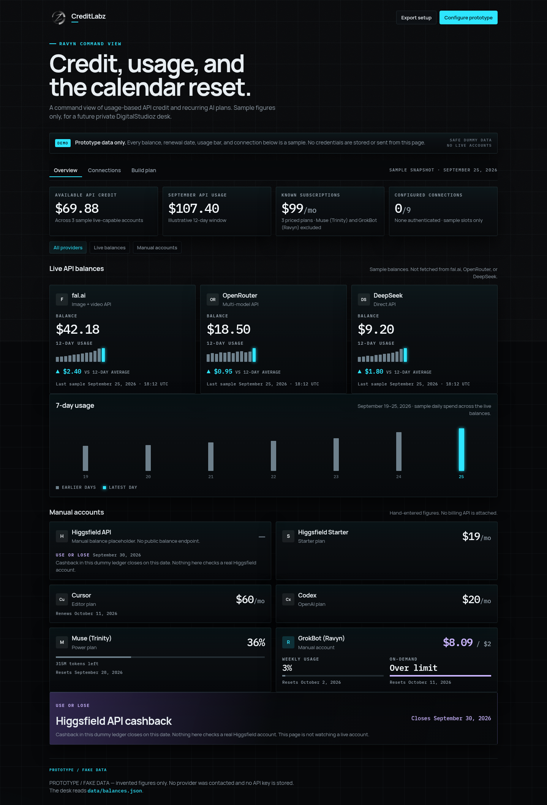

CreditLabz Ravyn bake-off
Three rendered sites, one folder each. Open a card to click through that version with its own CSS, JavaScript, and dummy ledger. The current desk keeps the v3 layout and wears the v2 cyan-dark colors. The v2 folder keeps the older cyan layout. Prototype data only.


